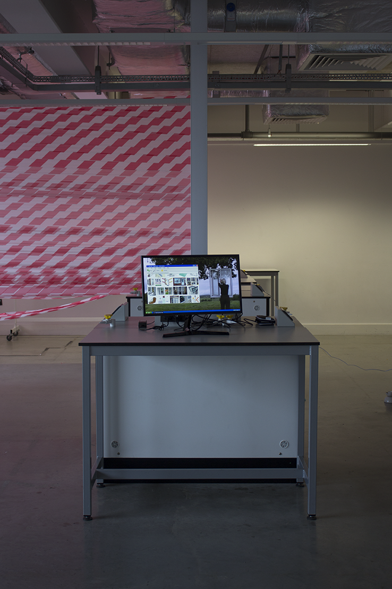

Cmd w (2017)
Collaboration with Niels van der Donk
Interface 8 (2017)
‘Interface 8’ Installation view.
Image courtesy of Swiss Mobiliar
‘Interface 8’ Installation view.
Image courtesy of Swiss Mobiliar
This website is under construction (2017)
Interface 5: Screen wipe (2017)
Interface 4: The Load (2017)
Interfaces 1, 2 & 3 (2017)
Interfaces 1, 2 & 3. Film (2017)
Interfaces 2 & 3. Version 2 (2017)
Sketch 2 (2017)
I Mac am... (2016)
Jonny official full trailer (2016)
Jonny official full trailer Installation view (2016)

‘Dear Jonny’ (2016).
Publication made alongside ‘Jonny Official full trailer’ (2016).
Untitled (2016)
Two computers in converstation (2016)
Metaphonica ||| (09/03/17)
Video courtesy of Daria Blum
EEWW @ Come to Fine art, we drink alot: Open studio (17/03/17)
Video courtesy of Daria Blum
Word in Transit Interview (30/09/17)


Image courtesy of Word in Transit.
Krystal Myth Instagram

EEWW Soundcloud

INFLATABLE 01 (2017)


Squadge #2, York College.
HARDBOUR (2017)
An investigation into Google earth’s sculpting of the Royal William Yard Harbour and its surrounding waters.
Plymouth Art Weekender 2017.
BAG 01 (2017)
Sound piece, £1.99 Bag (5mins).
Plymouth Art Weekender 2017.
SQUADGE #2

SQUADGE #2 sees a nomadic, multidisciplinary collective of London-based artists install new works at York College Gallery for six weeks, constituting an ongoing show interspersed with performances and workshops throughout. Formed of 18 recent graduates, SQUADGE was born out of fortnightly, self-organised crit sessions held at Central Saint Martins. The show in York will be their second together and follows an exhibition last month as part of Plymouth Art Weekender.
SQUADGE

SQUADGE brings 18 emerging, London based artists down to the South West to showcase new, site responsive work within Plymouth School of Creative Arts. The artists themselves have been selected through their involvement in fortnightly group crit sessions, hosted at Central Saint Martins, and demonstrate a wide range of critical practices, which explore: Video, Performance, Sculpture, Drawing, Writing and Installation.
In conjunction with the show we will be holding one of our Group Crit sessions within the space; inviting local artists to discuss their own work and providing a platform through which we hope to engage with the local public, and in doing so, form new artistic connections between the South West and London.
SHIT CRIT @ CSM SEPTEMBER 2016 - MAY 2017